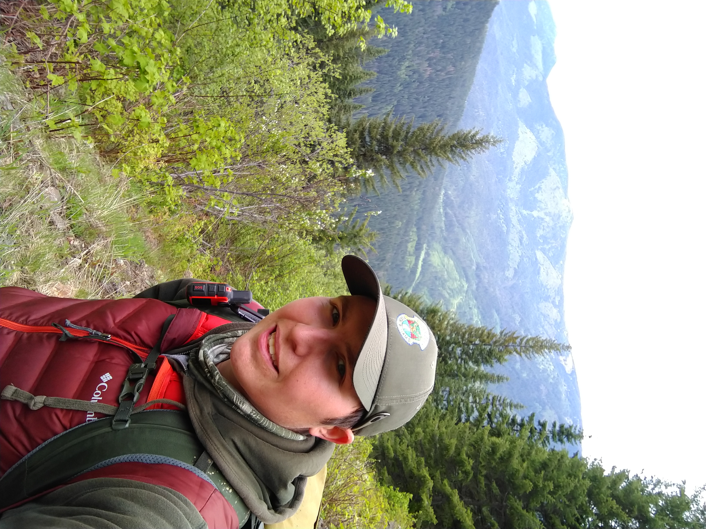

Robert Ritson’s Wildlife Research Portfolio
I’m Rob Ritson. I am a wildlife research scientist specializing in movement and spatial ecology. I am skilled at creating and managing large geographic information databases and proficient in RStudio and the ESRI suite. I am continuing to develop my coding skills in Python and currently teaching myself Julia.
I have 8+ years of field experience conducting population and habitat monitoring with a diversity of species in collaboration with state and federal agencies as well as 5+ years analytical experience managing large GPS data sets, assessing spatial patterns, and composing scientific manuscripts.

Places I’ve worked